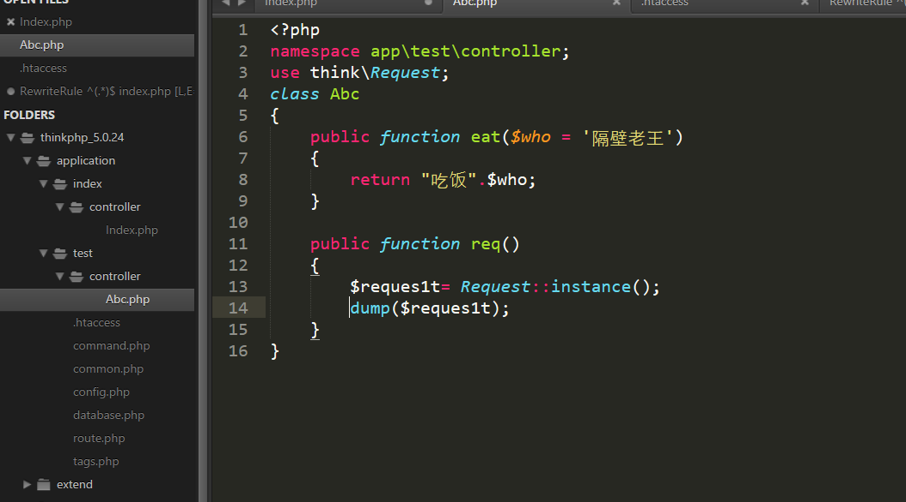
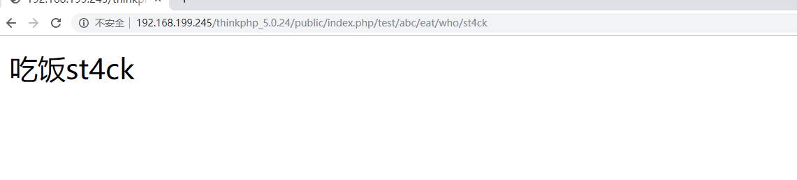

一、Thinkphp5中No input file specified 问题解决
.htaccess文件中的
RewriteRule ^(.*)$ index.php/$1 [QSA,PT,L]在默认情况下会导致No input file specified.
修改成
RewriteRule ^(.*)$ index.php [L,E=PATH_INFO:$1]官方教程https://www.kancloud.cn/manual/thinkphp5/content
二、路由
关闭路由，完全使用默认的PATH_INFO方式URL：
'url_route_on' => false,路由关闭后，不会解析任何路由规则，采用默认的PATH_INFO 模式访问URL：
http://serverName/index.php/module/controller/action/param/value/...结构如图
其实可以省略index.php
http://192.168.199.245/thinkphp_5.0.24/public/test/abc/eat/who/st4ck

三、绑定默认模块
在public下的index.php加上
define('BIND_MODULE','test');切记一定要在require __DIR__ . '/../thinkphp/start.php';之前
上方的url变为
http://192.168.199.245/thinkphp_5.0.24/public/abc/eat/who/st4ck如果你的应用比较简单，模块和控制器都只有一个，那么可以在应用公共文件中绑定模块和控制器，如下：
// 绑定当前访问到index模块的index控制器
define('BIND_MODULE','test/abc');那么url又变成
http://192.168.199.245/thinkphp_5.0.24/public/eat/who/st4ck四、设置返回类型
设置为json
'default_return_type' => 'json',五、控制器初始化
如果你的控制器类继承了\think\Controller类的话，可以定义控制器初始化方法_initialize，在该控制器的方法调用之前首先执行namespace app\index\controller;
use think\Controller;
class Index extends Controller
{
public function _initialize()
{
echo 'init
';
}
public function hello()
{
return 'hello';
}
public function data()
{
return 'data';
}
}如果访问
http://localhost/index.php/index/Index/hello
会输出
init
hello六、数据库操作
前面嘚 use think\Db;
public function get_em()
{ $query = new \think\db\Query();
$query->table('emails');
return Db::select($query);
}或者
public function get_em()
{
return Db::table('emails')->select();
}public function get_em()
{
return Db::table('users')->where('id',1)->select();
}插入数据
public function get_em()
{
$data = ['email_id' => 'bar1'];
Db::table('emails')->insert($data);
}插入多数据
public function get_em()
{
$data = [
['email_id' => '3333'],
['email_id' => '2333']
];
Db::table('emails')->insertAll($data);
}更新数据
Db::table('think_user')->where('id', 1)->update(['name' => 'thinkphp']);删除数据
// 根据主键删除
Db::table('think_user')->delete(1);
Db::table('think_user')->delete([1,2,3]);
// 条件删除
Db::table('think_user')->where('id',1)->delete();
Db::table('think_user')->where('id','<',10)->delete();七、模型绑定
和传统mvc一样，一个ef框架
先新建一个model
<?php
namespace app\test\model;
class User extends \think\Model
{
// 设置当前模型对应的完整数据表名称
protected $table = 'emails';
}默认优先使用外部设定的数据库，也可以自己拟定
<?php
namespace app\test\model;
class User extends \think\Model
{
// 设置当前模型对应的完整数据表名称
protected $table = 'emails';
// 设置当前模型的数据库连接
protected $connection = [
// 数据库类型
'type' => 'mysql',
// 服务器地址
'hostname' => '127.0.0.1',
// 数据库名
'database' => 'security',
// 数据库用户名
'username' => 'root',
// 数据库密码
'password' => 'liu19990808',
// 数据库编码默认采用utf8
'charset' => 'utf8',
// 数据库表前缀
'prefix' => 'think_',
// 数据库调试模式
'debug' => false,
];
}然后controller要使用
public function set_mo()
{
// 实例化模型
$user = User::all();
return $user;
}前面需要加上
use app\test\model\User;
use think\Db;修改属性
public function set_mo()
{
// 实例化模型
$user = User::get(1);
$user->email_id='hello kitty';
$user->save();
return $user;
}八、模板
模板路径倒是很奇怪的样子

然后就是一些模板语法
public function fetch1(){
$view = new View();
$view->name = 'thinkphp';
return $view->fetch('index');
}Hello,{$name}！